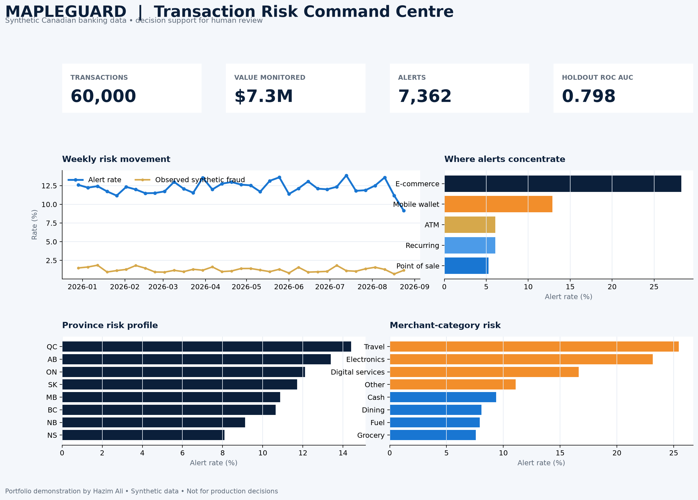

Synthetic source
60,000 deterministic Canadian transaction events. No customer data.
A privacy-safe Canadian banking lakehouse—designed to show how clean data, explainable analytics, and sharp business storytelling can support better decisions.
Hazim Ali
Open to Winter 2027 co-op
Every layer exists for a reason: preserve lineage, improve trust, measure the model, and keep a person in the decision loop.
60,000 deterministic Canadian transaction events. No customer data.
Bronze, Silver, and Gold layers with explicit quality gates.
Time-aware modelling, monitored metrics, and behavioural reason codes.
Executive trends plus a prioritized analyst review queue.
The dashboard is built around five decisions: size the monitored activity, detect movement, find concentration, assess model utility, and prioritize review.

Local QA preview shown. All metrics come from deterministic synthetic data and do not claim production performance.
High recall can help catch more risky events, but it can also create expensive false positives. MapleGuard surfaces precision, recall, F1, average precision, ROC AUC, and false-positive rate together.
The project was shaped by a live scan of Big Six co-op requirements and packages the strongest common themes into one honest case study.
Reproducible generation, quality checks, feature engineering, Delta-style marts, and tested outputs.
Event-time holdout, class imbalance, threshold governance, reason codes, and explicit limitations.
Executive KPIs, diagnostic views, prioritized queue, and plain-language interpretation.